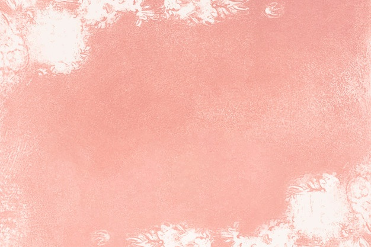

ORIGAMI INSTRUCTIONS AND DIAGRAMS...!!
Step by Step diagrams are probably the most popular and easiest to follow way to show how to fold things out of paper.
Trying to find good origami instructions on the Internet can be a lot of work though. To help your search we’ve put
together the largest database of free origami diagrams anywhere on the Internet.

Camel
- Camels have three sets of eyelids and two rows of eyelashes to keep sand out of their eyes.
- Camels have thick lips which let them forage for thorny plants other animals can't eat.
- There are two types of camels: One humped or “dromedary” camels and two humped Bactrian camels.

chamelon
- THEIR FEET WORK LIKE SALAD TONGS. ...
- ALMOST HALF OF ALL KNOWN SPECIES LIVE IN MADAGASCAR. ...
- THEY MAINLY CHANGE COLOR IN ORDER TO COMMUNICATE OR REGULATE BODY TEMPERATURE. ...
- SKIN CRYSTALS ENABLE THEM TO CHANGE COLOR AT WILL.

chamelon
- Step two: fold the paper in half so it's a triangle. ...
- Step four: lay your paper flat on a table and get ready to fold some more!
- Step five: place your triangle so it's pointed downward. ...
- Step eight: turn your paper over. ...
- Step ten: fold again upwards to make a face.